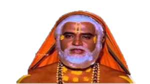

SUPER
STAR
ABOUT
His original name is Shivaji Rao, (born December 12, 1950, Bangalore, Mysore [now Bengaluru, Karnataka], India), Indian actor whose unique mannerisms and stylized line delivery made him one of the leading stars of Tamil cinema. With roles in more than 160 films, he also enjoyed considerable success in Hindi, Telugu, and Kannada movies.
A film buff since his boyhood, Rajnikanth moved to Madras (now Chennai) in the early 1970s to join the Madras Film Institute, where he trained as an actor. He made his debut in 1975
PODA
andha aandavane
Namba pakkam irukan
TIME LINE
1975
He made his cinematic debut with K. Balachander's Tamil drama Apoorva Raagangal, in which he played a minor role of an abusive husband. where he appeared for just fifteen minutes of shot. he acted in 15 films, playing negative characters. No one in their wildest imagination would have thought that this man will rule the Kollywood one day

1980
he was cast as the main lead in the Tamil film Bairavi. The same year, he received critical acclaim for his roles in Mullum Malarum and Aval Appadithan. He played dual roles in the action thriller Billa (1980). It was his biggest commercial success to that point and gave him the action hero image. Murattu Kaalai released in 1980 was instrumental in establishing Rajinikanth as both an action hero and superstar.
1981 - 1983
Balachander's Thillu Mullu (1981), was Rajinikanth's first full-length comedy film. He played triple roles in the 1982 Tamil film Moondru Mugam, which earned him a special prize at the Tamil Nadu State Film Awards ceremony. The following year, he made his Bollywood debut with T. Rama Rao's Andhaa Kaanoon; it was among the top-grossing Bollywood films in 1983.


1985 - 1900
In 1985, he portrayed the Hindu saint Raghavendra Swami in his 100th film Sri Raghavendrar, 1980s, he starred in several films in Tamil and Hindi, including Padikkadavan (1985), Mr. Bharath (1986), Bhagwaan Dada (1986), Velaikaran (1987), Guru Sishyan (1988) and Dharmathin Thalaivan (1988). During this time, he made his debut in American cinema with a supporting role in the mystery adventure film Bloodstone (1988).
1991 - 1998
Mani Ratnam's Tamil film Thalapathi (1991), based on the Indian epic Mahabharata, earned him critical acclaim. The film BAASHA, in which he played a crime boss, was a major commercial success in his career and earned him a "demigod" status. Later that year he acted in K.S.Ravikumar's Muthu, which was dubbed into Japanese. In Japan, the film grossed a record US$1.6 million in 1998 and was largely creating a fan-base for Rajinikanth in the country.
1998 - 2007
Padayappa (1999), his second collaboration with Ravikumar, went on to become the highest-grossing Tamil film. In 2002 Rajinikanth produced, wrote and starred in the fantasy thriller Baba, The comedy horror film Chandramukhi (2005), and its theatrical run lasted 126 weeks at Shanti Theatre in Chennai. Rajinikanth was paid ₹26 crore for his role in S.Shankar's Sivaji (2007), which made him the second-highest paid actor in Asia after Jackie Chan.
2010
He played dual roles, as a scientist and an andro-humanoid robot, in the science fiction film Enthiran (2010). It was India's most expensive production at the time of its release, and is among the highest-grossing Indian films of all time. a to be shot with m. Two years later, Rajinikanth played a Malaysian Tamil crime boss in Pa. Ranjith's Kabali, which had the biggest weekend opening for an Indian film.